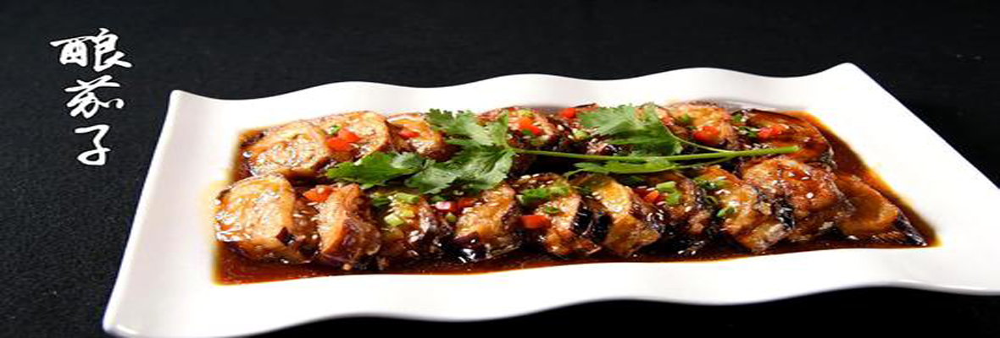
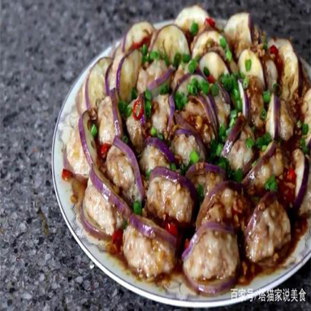
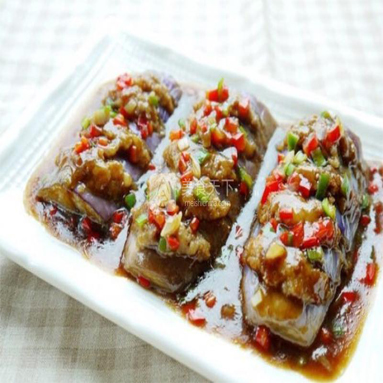
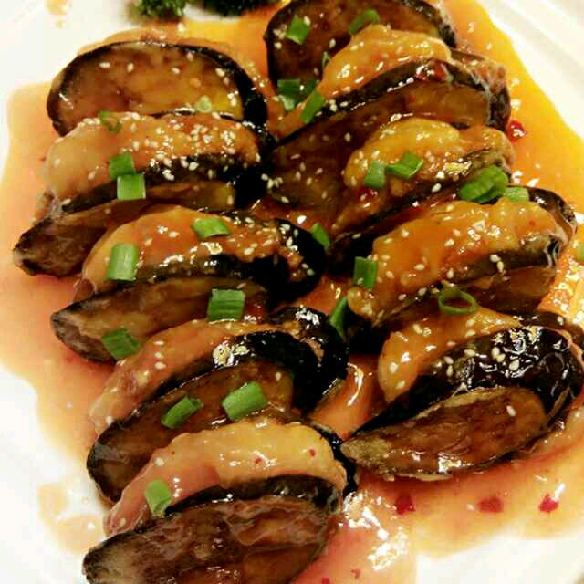

| 舌尖上的美食首页 | 菜谱 | 食材 | 珍选 | 家乡菜 | 活动 | 搜索 | 注册 | 登录 | QQ登录 | 签到有礼 | 客户端 |
|  |
| 这道菜叫“茄子酿”，是岑溪的特色名菜之一喔。所谓“无酿不成餐”来描绘岑溪市的饮食文化，一点也不夸张，它是把肉馅填入不同瓜菜或豆制品中，或煎炒或焖炖，熟后美其名曰“酿”。 |
| ⊙靓菜做法 | ||
| 1、紫茄子洗净切片，每一片都用刀横竖划几刀（为了入味），芋艿和瘦肉切成末，切好的肉末加生抽、盐捏匀，用筷子搅打上劲。 2、盘子里摆好圆茄子，把肉末揉成球形，每一片茄子上都放一颗肉球。 3、上锅蒸熟，把蒜切成末，锅里放油，把蒜煸炒至香。 4、把刚才蒸好的茄子酿盘子里的汤汁倒入锅里，如果觉得不够，可以加适量的水，再加适量的生抽，煮开，适量的淀粉加凉白开水，拌匀。 5、倒入锅内，煮几秒钟至粘稠，煮好的汤汁浇至刚才蒸好的茄子酿上。 |
||
|  |  |  |